Branding Graphic design UI
I was contracted by Cause, a brand consultancy known for its impactful work with purpose-driven organizations, to create a new visual identity system and website for The Wean Foundation that would better reflect their mission and impact. Wean is a 75-year-old institution dedicated to strengthening and supporting under-resourced communities in Ohio's Mahoning Valley.
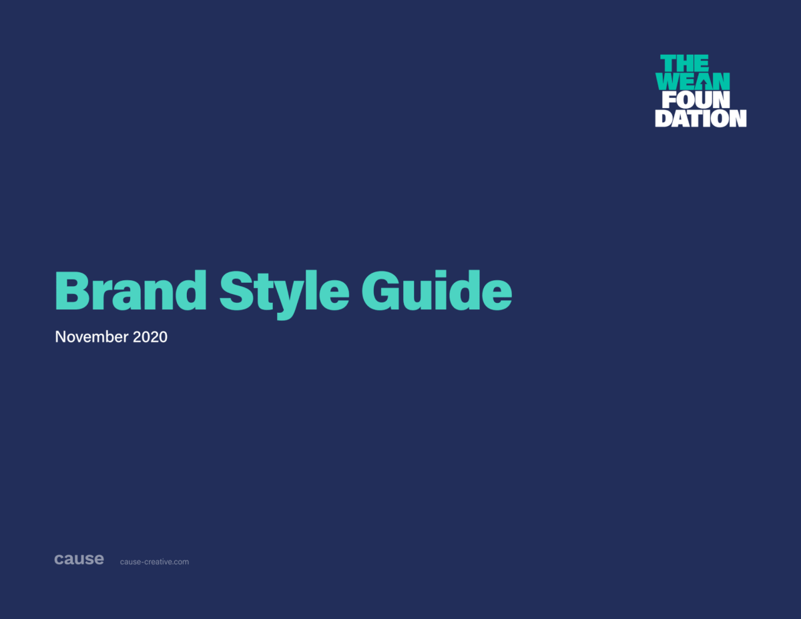
Selection from the brand guidelines that explained Wean's new identity and provided guidance for usage.
Founded in 1949, The Raymond John Wean Foundation focuses on creating a racially equitable future for the underresourced communities of Warren and Youngstown, Ohio. Through a combination of grantmaking, capacity building, convening, and partnerships, the organization works with residents and civic leaders to redistribute decision-making power and provide equal educational and economic opportunities. In 2023, the Foundation awarded 30% of its Community Investment grant dollars — nearly $1M — to Black, Hispanic, and Latinx-led organizations.
By recognizing the opportunity for transformation, Wean reinforced its reputation as a fearless and resilient entity that faced change head-on. The project was a testament to their ability to look inward and adapt to the needs of an evolving local community.
Our small creative team faced the challenge of reinventing Wean without disturbing its 75-year old legacy. Additionally, their new brand needed to resonate with several audiences: local residents and business owners, prospective and existing partners and nonprofits, program curators, content experts, and government leaders.
The new logo included an upwards-facing arrow, formed by negative space within the logo's letterforms. This universal symbol represented progress, advancement, and prosperity, which Wean fosters for the Mahoning Valley community. We delivered horizontal and vertical orientations of the logo for to accommodate various layouts and contexts. Breaking up the word "Foundation" in the vertical orientation reinforced Wean's new messaging around "provoking new thinking and disrupting the status quo."
We selected Acumin Pro Ultra Black for their new statement typeface, which balanced rounded and angled features. We felt the characteristics of this font family achieved approachability with attitude and complemented Wean's new tone of voice.
Equally as important as their new identity was the ability to autonomously maintain it over time. In order to achieve consistency in future communications, we provided detailed brand guidelines for Wean's internal marketing and/or marketing partners to confidently and effectively share their story across all touchpoints.
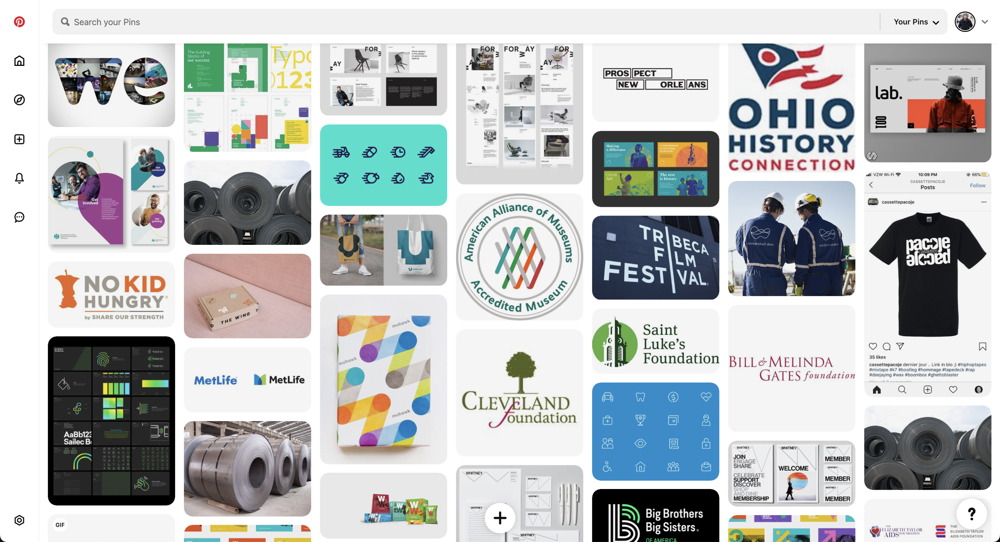
Gathering inspirational branding from various non profits and public institutions.
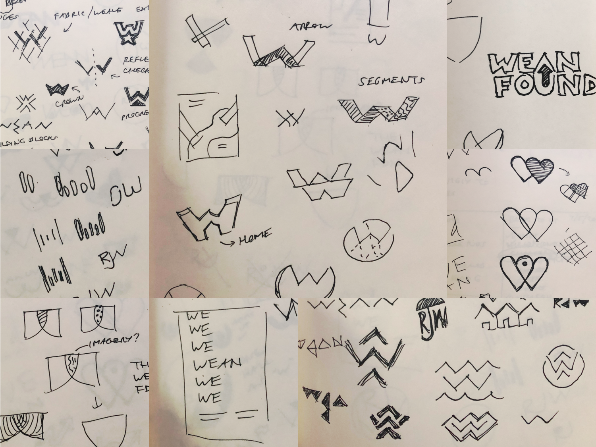
Early logo sketches centered around themes of community, connection, advancement, and location. The concept in the upper right informed the final version.
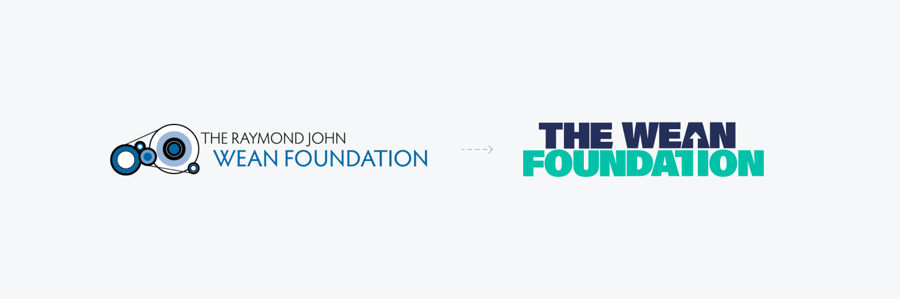
Logo before and after. The original logomark paid respect to Raymond John Wean's leadership in the flat-rolled steel industry by including a mill beside the type. He established the Foundation to serve the communities that contributed to his success.
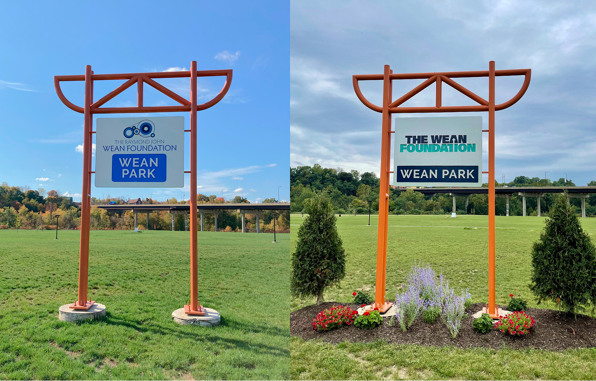
The Wean Foundation's logo, before and after, applied to signage at Wean Park, a community complex in Youngstown, Ohio with 20 aces of recreational green space and walking paths.
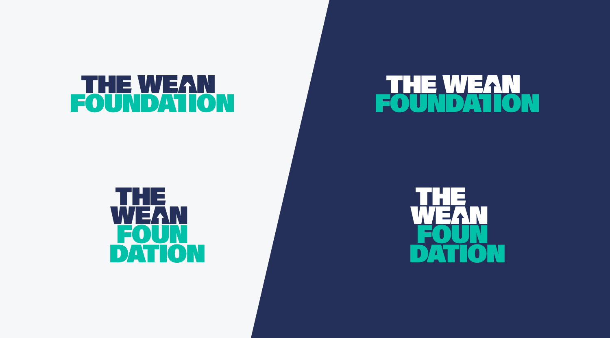
Horizontally- and vertically-oriented logo variations to accommodate varying contexts and layouts.
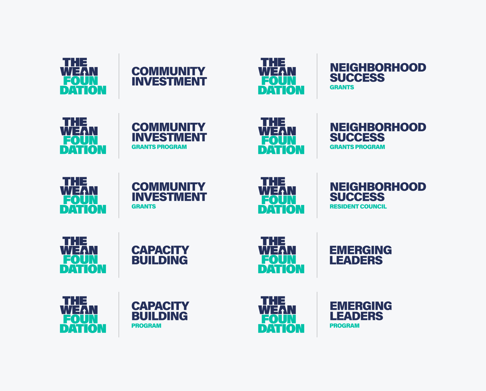
As part of the identity system, Wean required several lockups for various programs.
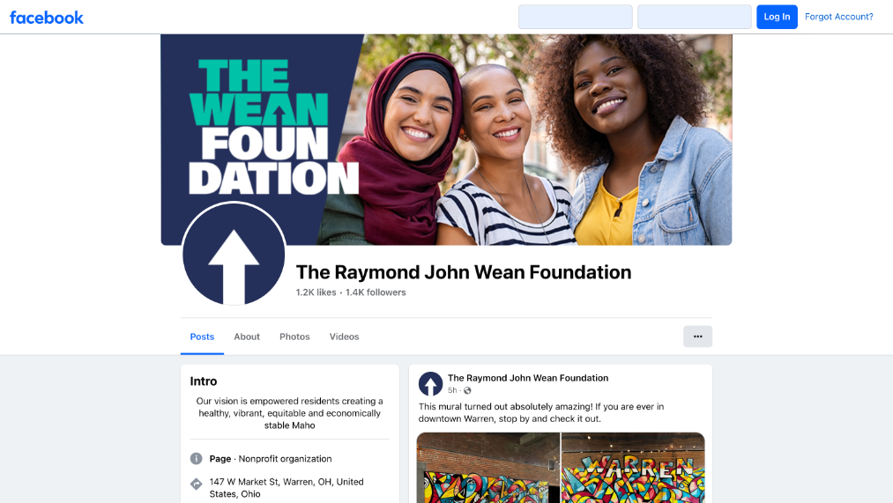
The new identity applied to Wean's Facebook profile.
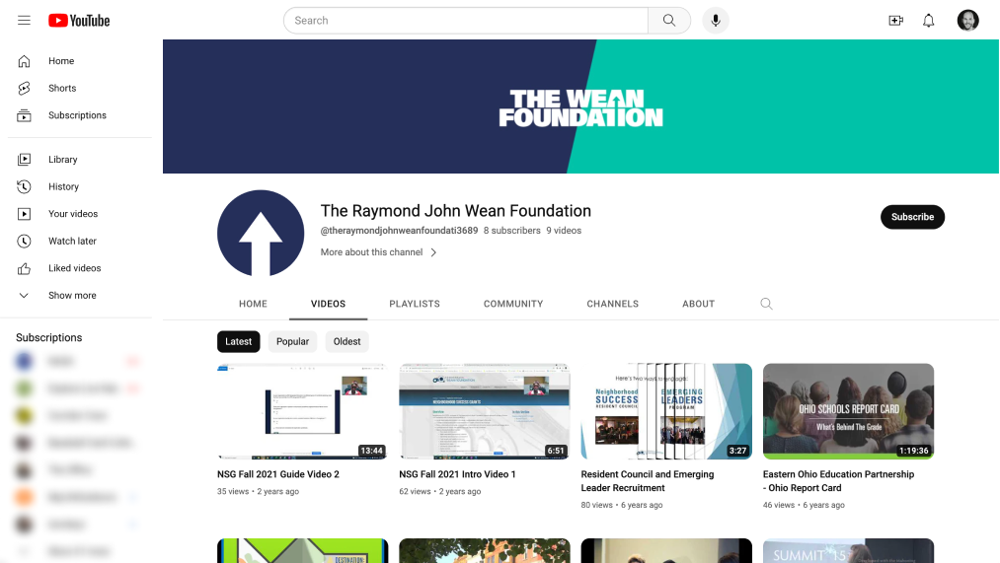
The new identity applied to Wean's YouTube profiles.
As part of Wean's revamped digital presence, we delivered a brand new, fully-responsive Wordpress website that consisted of 14 unique pages: Home, About, Build Community, Apply for Grants, Get Involved, See Impact, Impact Stories, Contact, News and Press, Book Conference Room, REI Journey, Find Resources, and Blog. The site set out to explain Wean's history, values, and mission, and allow users to: see and contact the Foundation's team, watch videos about resident experiences, read recent and historical news coverage and press releases, book a conference room at the headquarters, apply for a grant, and understand the Foundation's annual economic impact.
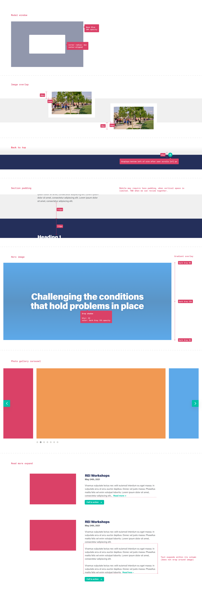
A sampling of specifications for the web developer that helped us build a scalable, consistent website.
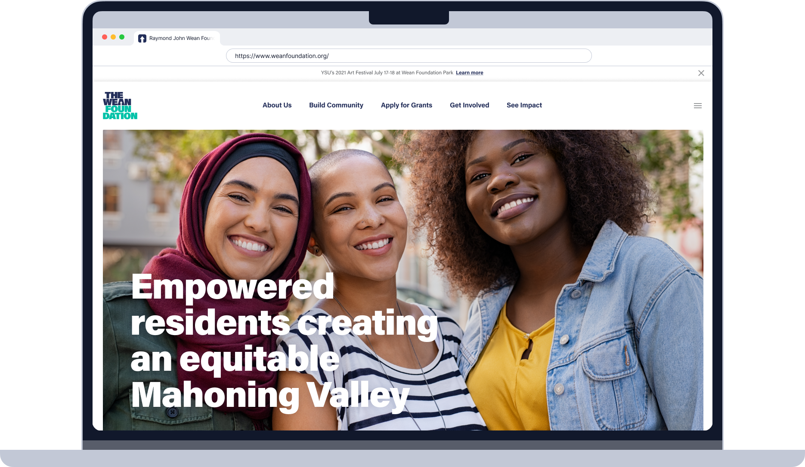
Wean's new homepage.
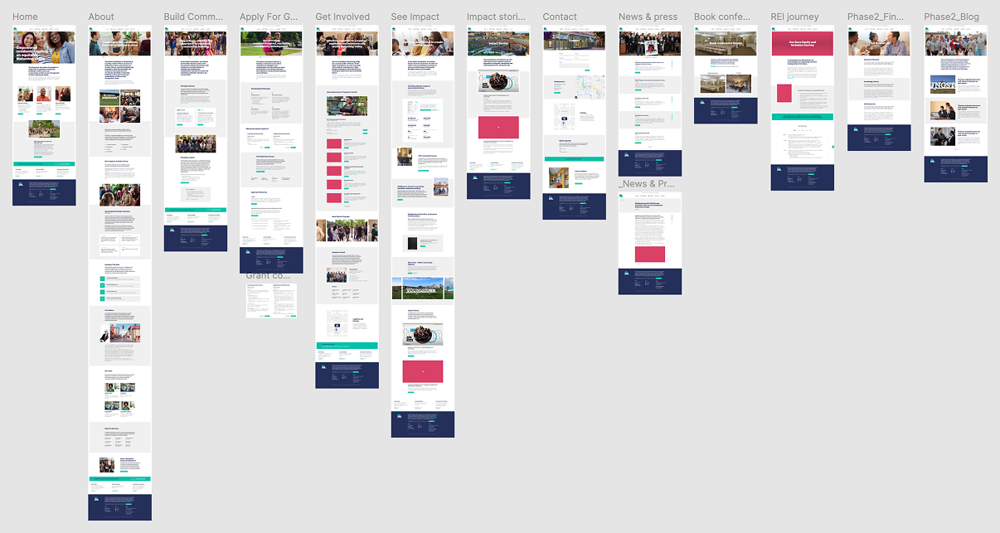
Wean's new website included 14 unique pages.